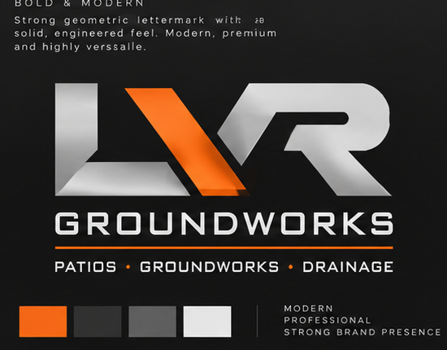

Built on a solid foundation.
Professional patios, groundworks and drainage solutions across Ipswich and the surrounding area.
GET A FREE QUOTE →What we do
Reliable groundwork from preparation through to the finished job, with straightforward quotes and a professional finish.
Patios
Patio preparation and installation, paving, edging and outdoor areas built to last.
Groundworks
Excavation, site preparation, foundations and general groundwork for domestic projects.
Drainage
Drainage installation, repairs, channels and practical solutions for water management.
Recent work
Project photographs will be added here as the portfolio grows.
Local. Practical. Professional.
LVR Groundworks specialises in patios, groundworks and drainage, serving Ipswich and locations roughly within a 40-mile radius. We focus on clear communication, tidy workmanship and a finish you can be proud of.
Need a quote?
Tell us what you need doing and we’ll discuss the job and arrange a quote.
CALL LVR GROUNDWORKSPatios • Groundworks • Drainage
Phone: 07704 502975
Area: Ipswich + surrounding areas